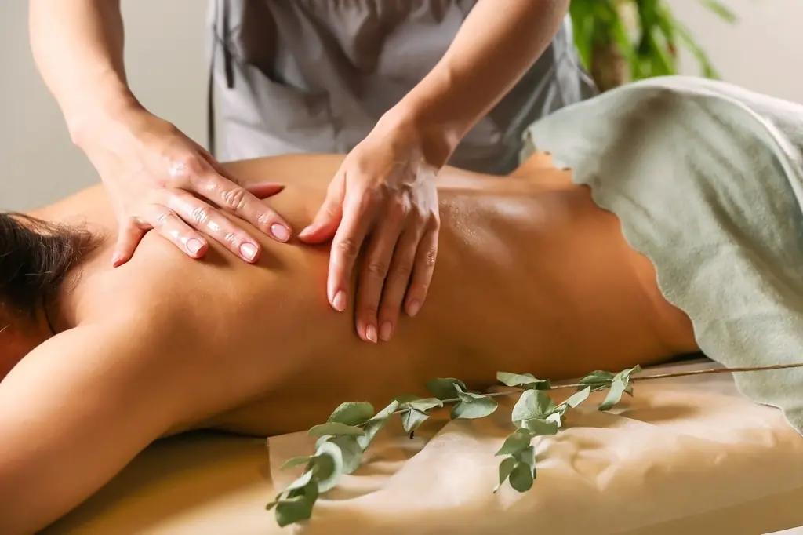

Медицинский массаж
Направлен на работу с мышечным напряжением, локальными болевыми зонами, спазмами и ограничением подвижности. Помогает снизить перегрузку мышц, улучшить кровообращение и восстановить более свободное движение.
Записаться